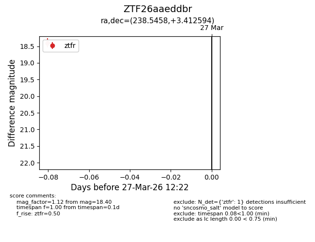
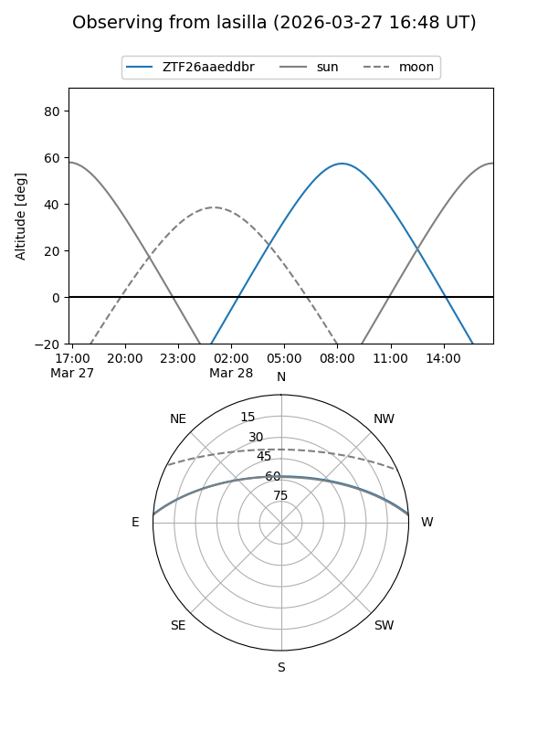
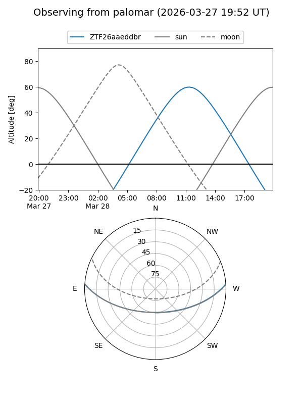

ZTF26aaeddbr
Target ZTF26aaeddbr at 2026-03-27 12:26
Aliases and brokers:
FINK: link
Lasair: link
ALeRCE: link
alt names
ZTF26aaeddbr (ztf,fink_ztf)
Coordinates:
equatorial (ra, dec) = 238.5458,+3.41259
equatorial (HMS+DMS) = 15:54:11.00,+03:24:45.34
galactic (l, b) = (12.5762,+40.37392)
Flags:
Photometry:
last ztfr=18.40
1 ztfr detections
Lightcurve

Visibility


Additional plots